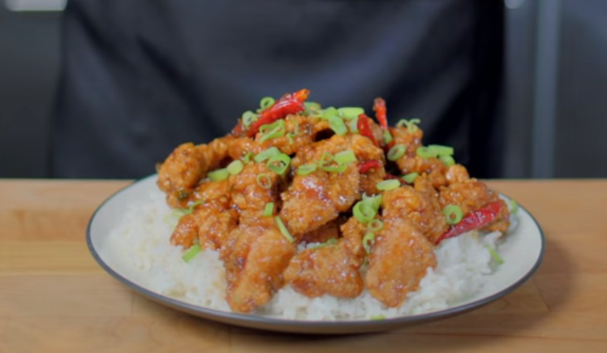

General's Crispy Chicken

Description
Here's a recipe for the standard sweet'n'sour crispy chicken you can find at most asian food resturaunts, called "General Tso's Chicken".
Ingredients
For the chicken and marinade:
2 egg whites
3 Tbsp dark soy sauce
3 Tbsp Chinese cooking wine
3 Tbsp vodka
1/4 tsp baking soda
3 Tbsp cornstarch
1 1/2 lbs boneless skinless chicken thighs
For the breading:
- 1 cup all purpose flour
- 1 cup cornstarch
- 1 tsp baking powder
- 1 tsp salt
- 3 Tbsp reserved marinade
For the sauce:
- 4 Tbsp dark soy sauce
- 4 Tbsp Chinese cooking wine
- 3 Tbsp rice wine vinegar
- 4 Tbsp chicken stock
- 1/4 cup sugar
- 1 tsp roasted sesame seed oil
- 1 Tbsp cornstarch
- 6 scallions
- 4 cloves garlic
- 2 inch piece of vinegar
- 6-12 arbol chiles (optional)